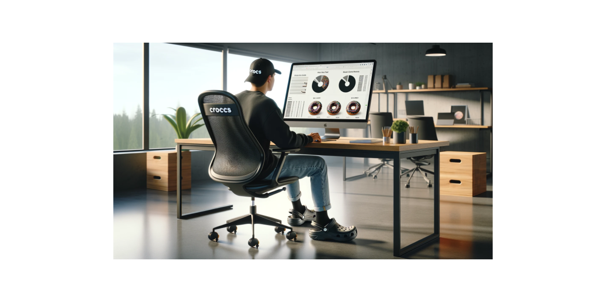
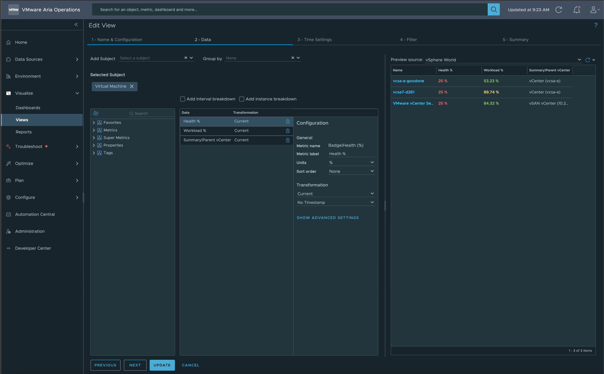
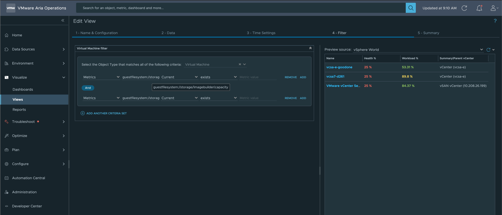
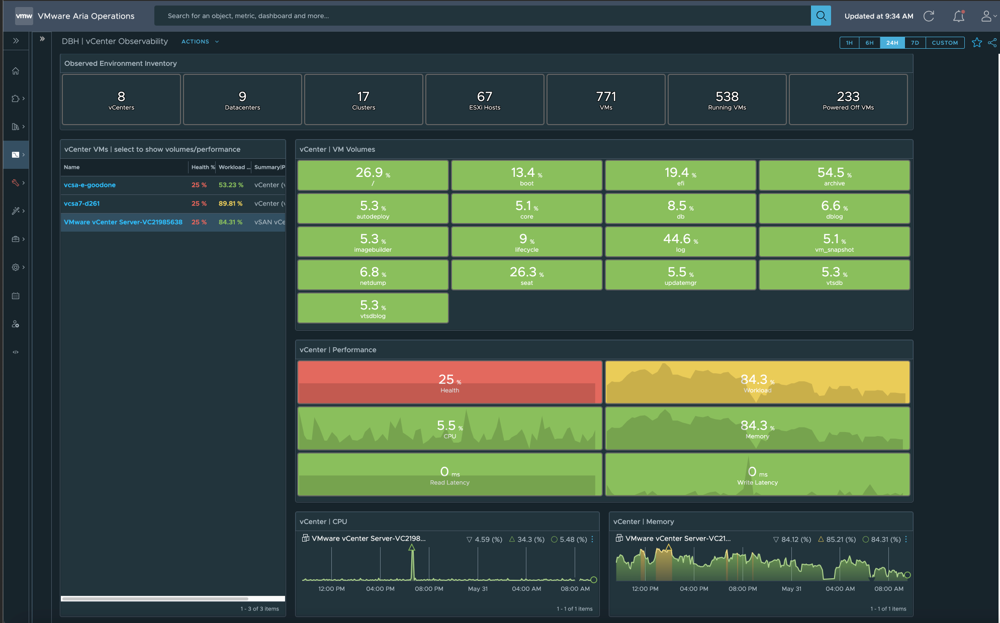

Aria Operations | vCenter Observability

How to monitor vCenter VM(s) within your environment
"It's really hard to design products by focus groups. A lot of times, people don't know what they want until you show it to them.” - Steve Jobs
vCenter Observability
I was recently asked how to monitor the VM that VMware vCenter runs on using VMware Aria Operations. The main request was to show the disk space used on the volumes to prevent them from filling up. In an environment with over 100 vCenters, I decided to create a view to show all the VMs running vCenter. While Aria Operations allows selecting all vCenters in a view, it does not natively show the VM name that vCenter runs on.
Creating a Custom Group in Aria Operations to specify the vCenter VMs manually seemed impractical. Initially, I considered using tags in vCenter and creating a Custom Group based on these tags. However, tagging over 100 vCenter VMs and ensuring they are properly tagged would be labor-intensive.
After some thought, I realized that the volume names for vCenter VMs were unique. I created an Aria Operations View to select VMs based on the existence of vCenter volumes. This approach allowed me to add the view to any environment, displaying only the vCenter VMs.
After creating the view to select only vCenter VMs, I aimed to build a comprehensive vCenter Monitoring Dashboard. At the top, I included counts of vCenters, clusters, hosts, and VMs, etc… as these metrics are frequently requested by management. The dashboard features widgets to display all VM volumes (the primary reason for creating the dashboard), vCenter VM performance, CPU/memory history, and a list of vCenters.
It's important to note that in VMware Aria Operations, showing VMware vCenter VMs is different from showing VMware vCenters. When a vCenter is selected in the vCenter Details widget, the dashboard displays host CPU/memory information.
To prevent ESXi hosts from being left in maintenance mode accidentally, I added a donut widget to show their status. Additionally, since cluster DRS can sometimes be disabled for changes and forgotten to be re-enabled, another donut widget shows the DRS status.
Steps to Create the Dashboard
1. Create the (4) Views
- Select all vCenter VMs
- Show vCenter Details
- Show Hosts Maintenance Mode Status
- Show Clusters DRS Status
2. Create the Dashboard
To simplify getting started, all the Views and the Dashboard are available in my GitHub repository for download. Click Here to Download the files.
View to Select vCenter VMs
View Data:

View Filter:
In the view filter, I specified two metrics: “guestfilesystem:/storage/imagebuilder|capacity” and “guestfilesystem:/storage/autodeploy|capacity”. If a VM contains these metrics, it will be selected. These volume names are unique to vCenter VMs, making this approach effective.

Dashboard Screen Shot:

Dashboard Usage:

Stay tuned for future blog posts. I plan to create dashboards for monitoring Aria appliances, similar to what I did for VMware vCenter. It's crucial to ensure these appliances are well monitored and maintained, like a Swiss watch.
Update: Link to Aria Appliances Observability Blog
Links to resources discussed is this Blog Post:
Product Version used for Blog Post:
- Aria Operations: 8.17.1
Lessons Learned:
- The relationship between VMware vCenter and the VM it runs on is not available out of the box in VMware Aria Operations. However, by identifying VMs through their unique volume names, I created a view that can be added to any environment to filter out the VMs running vCenter. The filter within that View is what enables this Dashboard to work.
In my blogs, I often emphasize that there are multiple methods to achieve the same objective. This article presents just one of the many ways you can tackle this task. I've shared what I believe to be an effective approach for this particular use case, but keep in mind that every organization and environment varies. There's no definitive right or wrong way to accomplish the tasks discussed in this article.
- If you found this blog article helpful and it assisted you, consider buying me a coffee to kickstart my day.